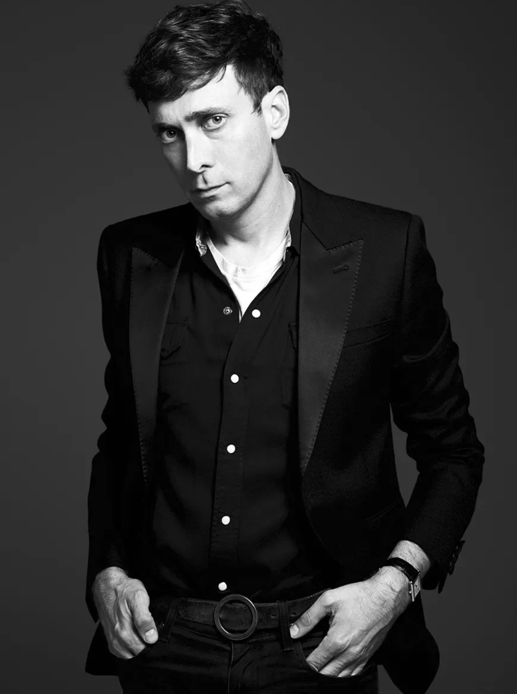
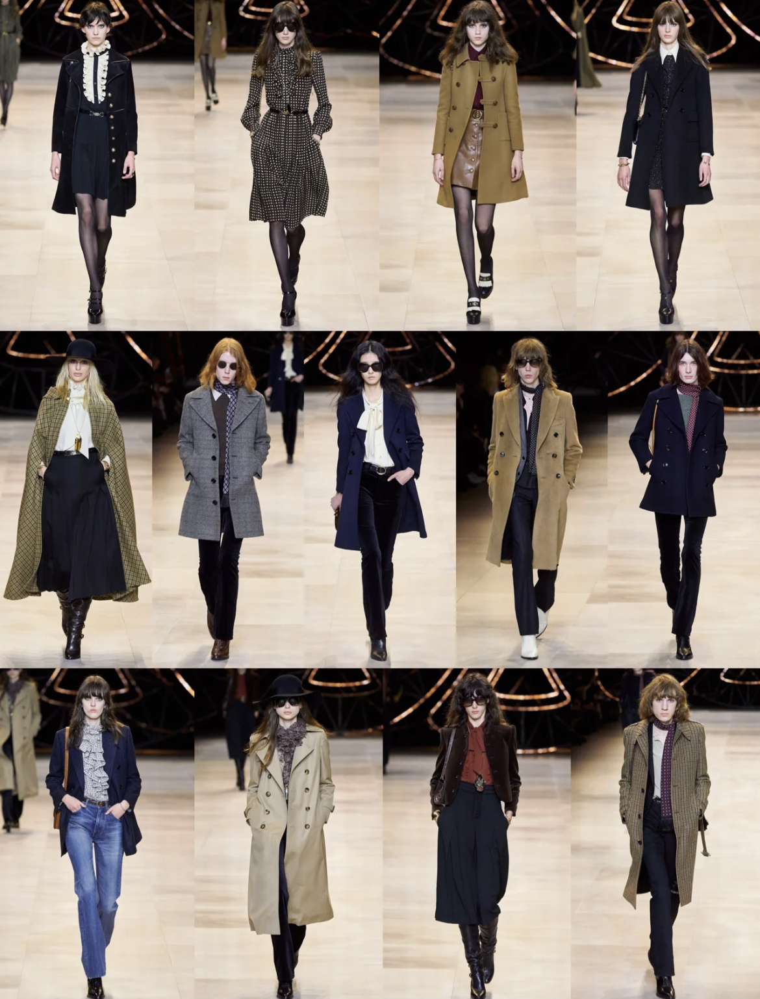
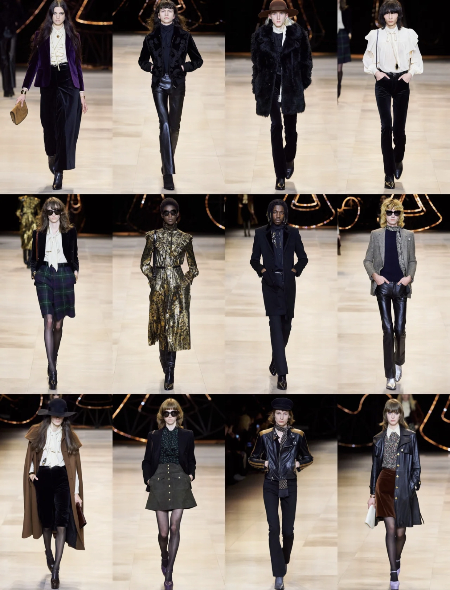
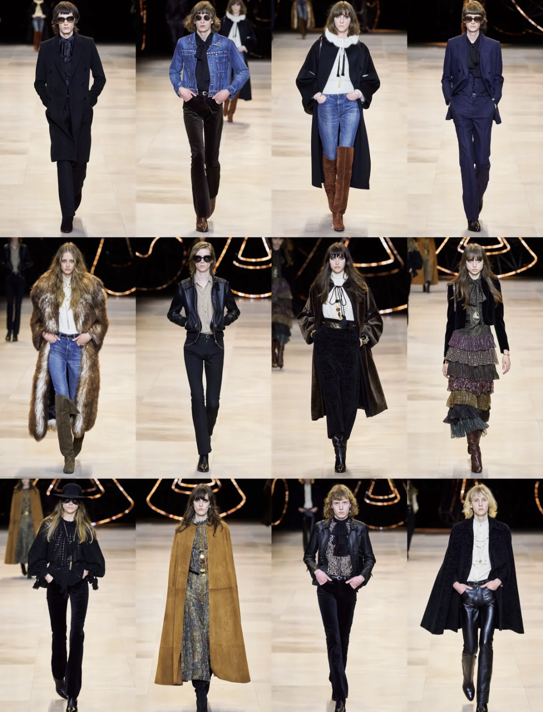
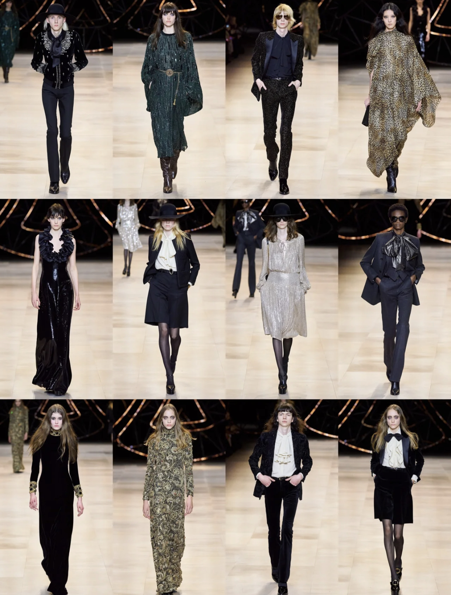

Today's Artist Introduction
Few careers have been so closely monitored, or as widely discussed in recent years, as Hedi Slimane’s. The designer joined the French luxury house in February 2018, as its artistic, creative and image director, making his debut expanding the label’s offering into menswear, couture and fragrance collections, debute dat the Spring/Summer 19 Paris fashion week. The Frenchman began his career in the 1990s as an assistant in fashion marketing at Yves Saint Laurent . In 1996 Pierre Bergé installed Slimane in the position of ready-to-wear director of men's collections at Yves Saint Laurent . (Slimane would later become artistic director of the line.) After the ‘Black Tie’ collection for Autumn/Winter 2000, which foreshadowed the advent of Slimane's skinny silhouette, Slimane chose to leave Yves Saint Laurent and declined an offer to take up the creative directorship at Jil Sander as well.
    